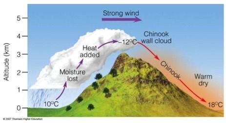
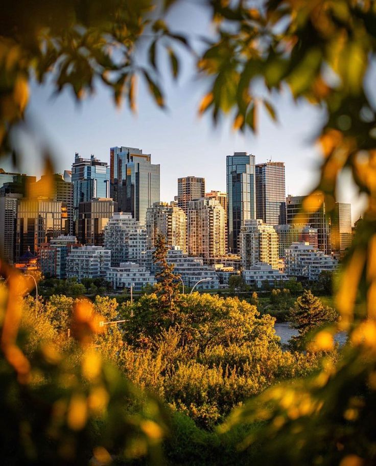
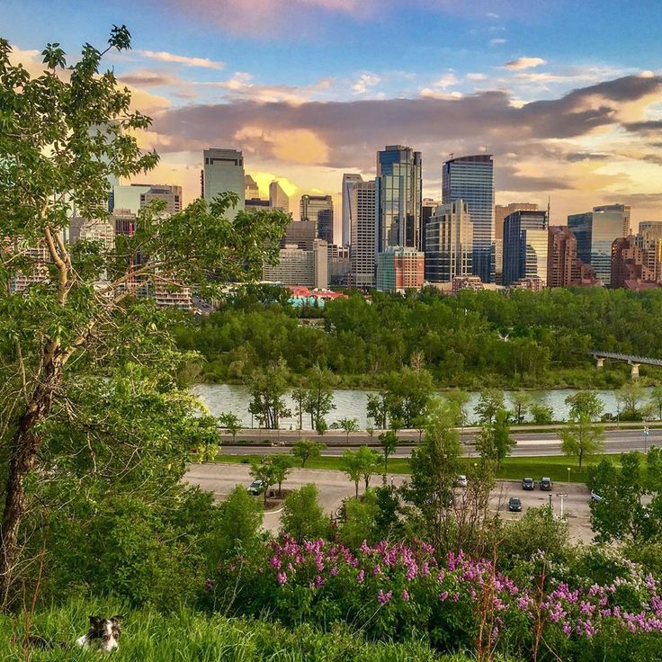
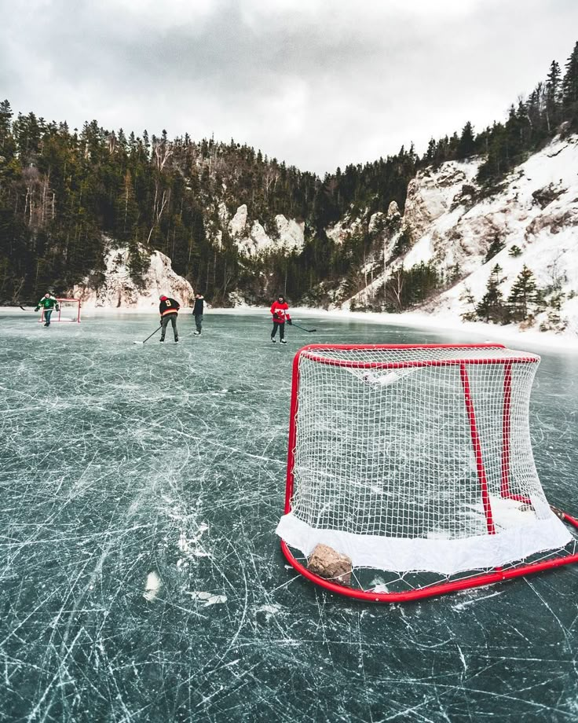
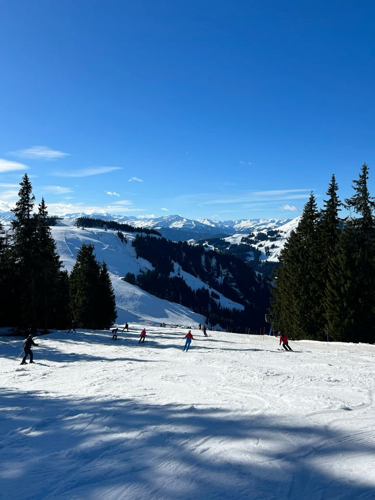

Localização em calgary
A Cidade que Une Natureza, Crescimento e Qualidade de Vida.
Você sabia que Calgary, no Canadá, é uma das cidades com melhor qualidade de vida do mundo? Com cerca de 1,6 milhão de habitantes, a cidade cresce rapidamente, atraindo pessoas de diversas partes do mundo em busca de oportunidades e um estilo de vida equilibrado.Localizada próxima às Montanhas Rochosas, Calgary combina a agitação de um grande centro urbano com a tranquilidade da natureza.
Além disso, é um dos principais polos econômicos do Canadá, impulsionado pelo setor de energia e tecnologia. Mas o que realmente chama atenção é seu alto índice de segurança, infraestrutura moderna e um dos mercados de trabalho mais promissores do país.
Clima
O Clima de Calgary: Extremamente Surpreendente! Se você acha que já viu mudanças de clima bruscas, é porque ainda não conheceu Calgary! Essa cidade canadense, localizada na província de Alberta, desafia qualquer previsão meteorológica.
No inverno, prepare-se para temperaturas que podem despencar para -30°C, acompanhadas de paisagens cobertas de neve e um frio de cortar a alma. 
Mas não se engane: de repente, um fenômeno chamado Chinook pode surgir, trazendo ventos quentes das Montanhas Rochosas e fazendo a temperatura subir mais de 20°C em questão de horas! 
O verão? Ele chega com força, trazendo dias longos, céu azul e temperaturas que podem ultrapassar os 30°C. 
Já a primavera e o outono? São verdadeiros quebra-cabeças, onde você pode começar o dia com neve e terminá-lo de camiseta. Se você gosta de surpresas meteorológicas e paisagens incríveis, Calgary pode ser o lugar perfeito para você. Afinal, quem não quer viver em uma cidade onde o clima sempre tem uma carta na manga?
Economia
A Cidade que Une Petróleo, Tecnologia e Qualidade de Vida.
Imagine uma cidade onde arranha-céus modernos dividem espaço com montanhas deslumbrantes e onde a economia pulsa entre tradição e inovação. 
Calgary, no Canadá, é conhecida por ser a capital do petróleo do país, mas sua economia vai muito além disso. Com um dos mercados de trabalho mais dinâmicos do Canadá, a cidade combina o poder da indústria energética com um crescente setor tecnológico. Startups, inteligência artificial e empresas de software estão transformando Calgary em um polo de inovação, atraindo investimentos e talentos do mundo todo. Além disso, o custo de vida competitivo e a ausência de imposto provincial sobre vendas tornam a cidade ainda mais atrativa para empreendedores e profissionais. Mas será que essa transição econômica vai torná-la a "Silicon Valley do Norte" ou ela permanecerá dependente dos combustíveis fósseis? O futuro de Calgary está se desenhando agora – e promete ser surpreendente.
Quais areas mais necessitadas
Calgary, a maior cidade da província de Alberta, no Canadá, destaca-se por sua economia diversificada e em constante crescimento.
Além de ser líder no setor de petróleo e gás, a cidade tem observado uma expansão significativa em outras áreas que demandam profissionais qualificados.
Tecnologia da Informação (TI): Com o avanço tecnológico global, Calgary tem se tornado um polo para empresas de TI, especialmente nas áreas de desenvolvimento de aplicativos móveis e segurança cibernética. A demanda por especialistas em linguagens de programação como Perl, Python e Ruby tem crescido consideravelmente.
Engenharia e Serviços Técnicos: A contínua expansão urbana e industrial da cidade requer engenheiros civis, mecânicos e elétricos, além de profissionais especializados em arquitetura e design. Esses setores são cruciais para sustentar o ritmo acelerado de desenvolvimento de Calgary.
Saúde e Assistência Social: Com uma população em crescimento, há uma necessidade crescente de profissionais de saúde, incluindo enfermeiros, médicos e terapeutas, bem como especialistas em assistência social para atender às diversas necessidades da comunidade.
Educação: A presença de instituições renomadas, como a Universidade de Calgary  atrai estudantes do mundo todo, aumentando a demanda por educadores, pesquisadores e pessoal administrativo qualificado.
atrai estudantes do mundo todo, aumentando a demanda por educadores, pesquisadores e pessoal administrativo qualificado.
Construção Civil: O boom imobiliário e de infraestrutura na cidade gera oportunidades constantes para trabalhadores da construção civil, desde operários até gestores de projetos.
Esses setores em expansão fazem de Calgary um destino promissor para profissionais em busca de novas oportunidades e desafios em suas carreiras.
Custo de vida
Um Custo de Vida Que Pode te Surpreender!
Imagine viver em uma cidade vibrante, cercada por montanhas deslumbrantes, com um mercado de trabalho forte e uma qualidade de vida invejável. Calgary, no Canadá, oferece tudo isso , mas será que o custo de vida acompanha essa reputação? A boa notícia é que Calgary tem um dos impostos mais baixos do país e salários atrativos, tornando-a uma opção viável para muitos. Aluguel? Mais barato do que Toronto e Vancouver. Transporte? Eficiente e acessível. Mas há pegadinhas: os preços de alguns serviços e lazer podem pesar no bolso se você não se planejar. Quer saber se Calgary cabe no seu orçamento? A resposta pode te surpreender!
Educação
Calgary é uma cidade vibrante e inovadora no Canadá, que tem ganhado destaque por seu sistema educacional excepcional. Com um forte foco em preparar os alunos para o futuro, a educação em Calgary se destaca pela combinação de tecnologia, inclusão e abordagens personalizadas para atender as necessidades de cada estudante. Mas o que realmente torna a educação em Calgary tão única? Descubra como as escolas locais estão quebrando barreiras e formando líderes do amanhã, enquanto exploram métodos que desafiam o convencional e abraçam as mudanças do mundo moderno. Não é apenas sobre aprender a matéria – é sobre construir um futuro com infinitas possibilidades.
Quais esportes mais praticados
Calgary, uma cidade conhecida por sua paixão por esportes, oferece uma ampla gama de atividades que atraem moradores e turistas.
Do hockey no gelo, esporte nacional  Até o esqui nas montanhas ao redor, há algo para todos. 
O rugby também cresce na cidade, com um time competitivo.
Para os mais aventureiros, as trilhas para ciclismo e caminhadas são um convite a explorar as paisagens de tirar o fôlego.
E claro, o rodeio, um dos maiores do mundo, ainda é uma tradição que encanta multidões.
Melhores epocas para visitar
Se você está planejando uma viagem para Calgary, a melhor época para visitar vai depender do que você busca: aventuras de inverno ou o charme do verão nas montanhas.
Durante o inverno (de novembro a março), a cidade se transforma em um paraíso para os fãs de esqui, com temperaturas que podem cair abaixo de -10°C, tornando as pistas de esqui da região uma atração imperdível.
Já no verão (junho a agosto), Calgary brilha com dias longos e temperaturas amenas, perfeitas para explorar os parques nacionais e trilhas ao redor, além de grandes festivais como o Calgary Stampede.